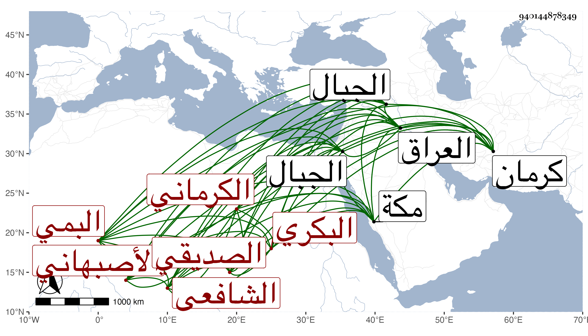

0902Sakhawi.DawLamic.ITO20230111-ara1.EIS1600.940144878349
Biography ID: 940144878349
970
سلام الله بن علي بن مطبر بن عمر بن مطهر الرضى أبو طاهر بن الغياث ابن الرضى البكري الصديقي الكوبناني المحتد البمي المولد وكؤبنان وهي : بضم الكاف والموحدة ونم كلاهما من أعمال كرمان الكرماني الأصبهاني الموطن الشافعي ولد بعيد العشاء من ليلة الثلاثاء من شعبان سنة ثلاث عشرة وثمانمائة وأخذ عن أبي سعيد بن الجلال الكازروني المحدث وأحمد الباوردي صاحب الحاشية على كل من الشمسية المنطقية وشرح المطالع والمطول وعن أحد أصحاب السيد الجرجاني وهو سعد الدين محمد المدعو لر نسبة لطائفة في الجبال يدعون بذلك يجيء منها لكرمان السمن والعسل والبغال الجيدة وغير ذلك ، وكذا أخذ عن العفيف الايجي وأبي الفتح المراغي والبخاري عن الوجيه علي بن محمد بن علي النابتي ووصفه بالعالم التقي الورع أستاذ القرآن والحديث في خطة العراق رواه له عن العفيف إبراهيم بن مبارز الخنجي يعني الماضي عن العفيف محمد بن سعد الدين محمد ابن مسعود الكازروني عن أبيه عن السراج أبي حفص عمر بن علي القزويني عن أبي عبد الله محمد بن عبد الله بن عمر بن أبي القسم السلامي المدني عن أبي الحسن ابن روزبة ، وكان إماما علامة حكيما مفننا صالحا جاور بمكة مرارا أو لها قبيل الخمسين وثمانمائة وأخذ عنه حينئذ المظفر محمود الأمشاطي الطب وعظمه فيه جدا ، وحكى لي عنه أنه كان يقول بسنية أكل البسلة ليلة الجمعة لأنها محركة للباه فربما تكون سببا لغسله وتغسيله ، والمنطق رفيقا لأبي الفضل النويري الخطيب ، وكذا أقرأ في الأصول وكثير من العقليات بل وفي الفقه أيضا . وكان فيما قيل متقدما في ذلك كله مستحضرا شرح الحاوي للقونوي ونسخته منه بخطه ، وآخر ما جاور سنة إحدى وثمانين . وممن أخذ عنه عبد المحسن الشرواني . مات في سنة ست أو سبع وثمانين رحمه الله وإيانا .
